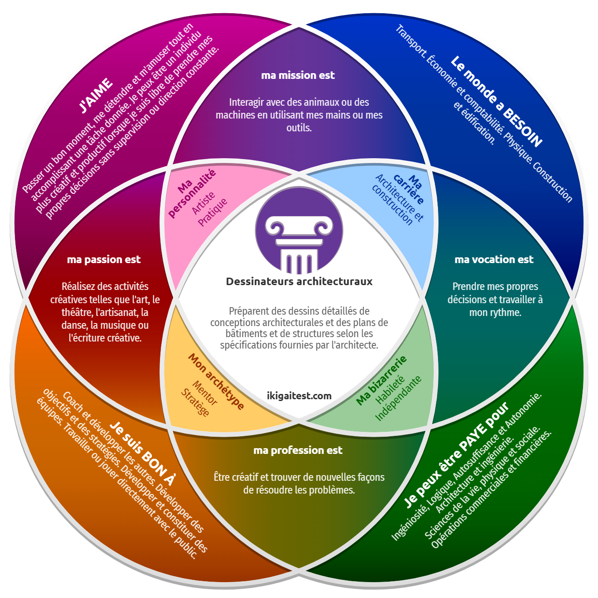

Dans un monde où chacun cherche sa place, il en est un qui a su tracer la sienne avec précision et instinct : celle du dessinateur architectural de l’action, mi-stratège, mi-artisan, 100 % passion. L’Ikigaï, ce concept japonais qui relie ce qu’on aime, ce pour quoi on est doué, ce dont le monde a besoin et ce pour quoi on peut être payé, en fait foi, son terrain de jeu, c’est l’endroit où les idées prennent forme, où la main suit la vision, et où l’autonomie est reine.
Lucas aime créer, bricoler, imaginer, et surtout agir sans supervision constante. Donnez-lui un projet, il en fera une œuvre. Qu’il s’agisse de théâtre, de musique ou de machines, ce qu’il aime, c’est le faire vivre, concrètement, avec ses mains et ses outils.
Ce n’est pas juste un rêveur. C’est un mentor, un stratège. Il est fan à l'idée de coacher, d'établir des stratégies et organiser le travail des autres. Qu’il s’agisse de guider une équipe ou de convaincre un public, il est à l’aise dans l’arène. Ce n’est pas pour rien que son Ikigaï le place dans des domaines où créativité et résolution de problèmes se conjuguent.
Il n’est pas juste un exécutant, c’est un constructeur de sens. Son Ikigaï, c’est sa feuille de match : un plan clair, une passion solide, et un style bien à lui. Si la vie était un sport, lui jouerait à la fois coach, capitaine et maître du jeu.